우크라이나의 겨울밀 이야기
게시: 2022-03-24T06:30:25+09:00
최근 우크라이나 전쟁으로 많은 비극이 벌어지고 있습니다. 그런데 이게 결코 먼 남의 나라 이야기가 아니고, 우리 밥상 물가도 위협하고 있습니다. 석유와 천연가스 이야기는 이미 귀에 딱지가 앉을 정도로 많이 들으셨을 것이고, 아마 밀을 비롯한 곡물 이야기도 꽤 많이 들으셨을 것입니다. 우리의 상식과는 달리 우크라이나에서는 이미 밀 파종은 이미 작년 10월 전후에 다 끝났습니다. 그때 씨 뿌려서 올해 7~8월에 수확하는 겨울밀이 우크라이나 밀의 95%입니다.
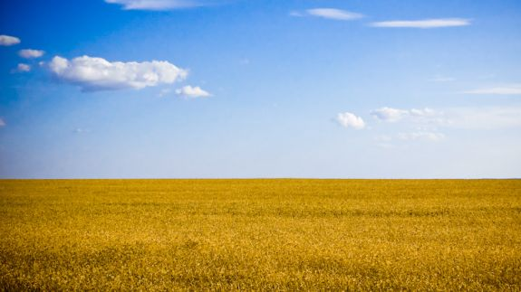
가을에 뿌린 밀은 곧 싹이 텄다가, 기온이 10도 이하로 내려가면 적응 기간을 거쳐 눈 밑에서 일종의 동면 상태로 겨울을 나고 봄에 막 생장을 시작합니다. 그렇게 겨울을 나는 동안 보통 15%의 싹이 죽어버립니다. 2002~2003년인가... 그때는 유난히 추운 겨울 날씨때문에 거의 절반 넘는 싹이 얼어죽어서 난리가 난 적도 있었습니다. 그런데 왜 그런 위험을 무릅쓰고 겨울밀을 심느냐 하면 의외로 겨울밀이 면적 대비 수확량이 많고 일손이 덜 들어가기 때문입니다. 벌레들도 환경이 나빠지면 알을 많이 낳듯이, (잘은 모르겠으나) 겨울을 나면서 밀의 생장력이 좋아진다고 합니다. 특히 우크라이나가 겨울밀 비율이 높은 편인데, 아마 강수량하고도 상관 관계가 높을 것입니다. 여름이 비교적 건조하고 겨울에 눈이 많이 오는 편이랍니다.
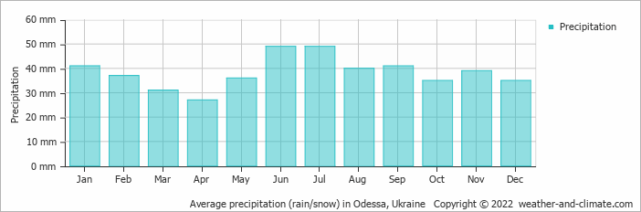
(그런데 실제로 찾아보면 여름 강수량이 겨울 강수량보다 많네요? 최소한 우리나라처럼 여름 장마철에 1년 강수량의 절반이 다 내리지는 않는 모양입니다.) 그러니까 지금 수출이 중단된 우크라이나 밀이나 러시아 밀이나 모두 겨울 밀이고 작년 7~8월에 수확된 것입니다. 작년 수확분 중 절반 가량이 아직 수출 안되고 남아 있다고 합니다. 참고로 러시아 경제제재는 농산물 수출을 막고 있지는 않으나 금융규제와 선적 거부 등으로 인해 사실상 중단된 상태이고 러시아도 자국 보호 차원에서 구소련 소속 국가들로의 식량 수출을 금지했다고 알려졌습니다. 그러나 최근 소식에 따르면 작년 이맘때의 1/3 수준이나마 러시아의 곡물이 꾸준히 수출되고 있다고 합니다.
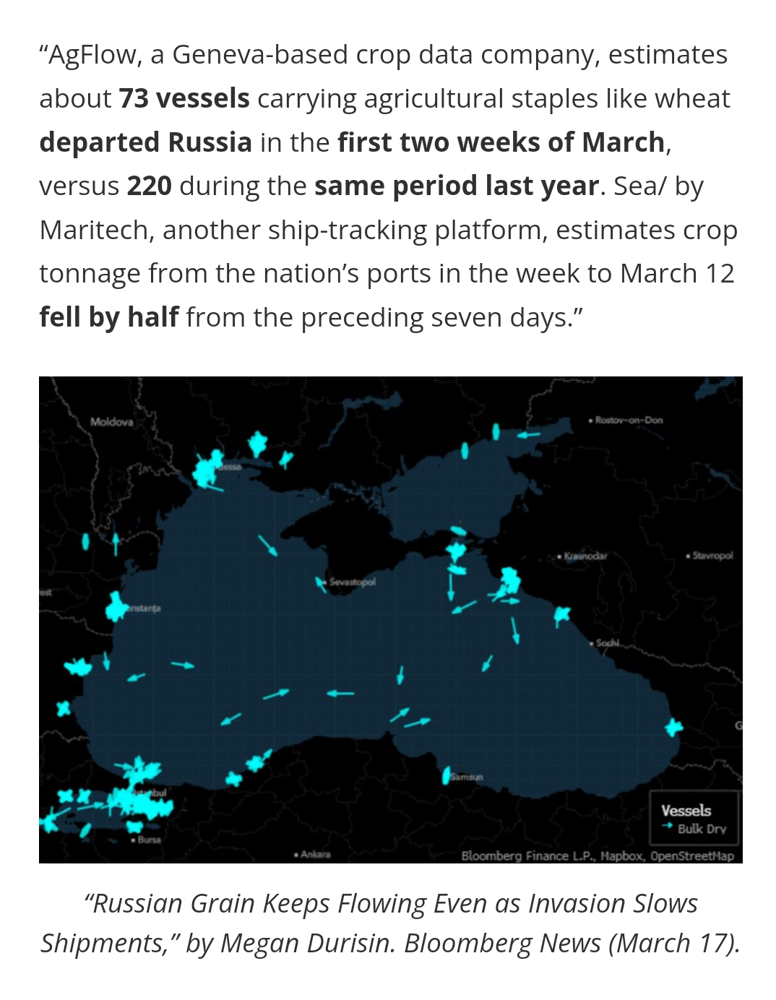
일단 씨가 다 뿌려졌으니 그냥 기다리면 되는 것 아니냐 싶지만, 봄에 비료를 뿌려줘야 수확량이 늘어나는데, 그게 현재 극히 어려운 상태라고 합니다. 아래 그림에서 보시듯이, 우크라이나 전체 국토의 대부분이 농경지이지만 겨울밀은 특히 남서부에서 더 집중적으로 재배됩니다. 요즘 전투가 격렬한 미콜라이우와 자포로제, 오데사 인근이 특히 집중 경작지입니다.
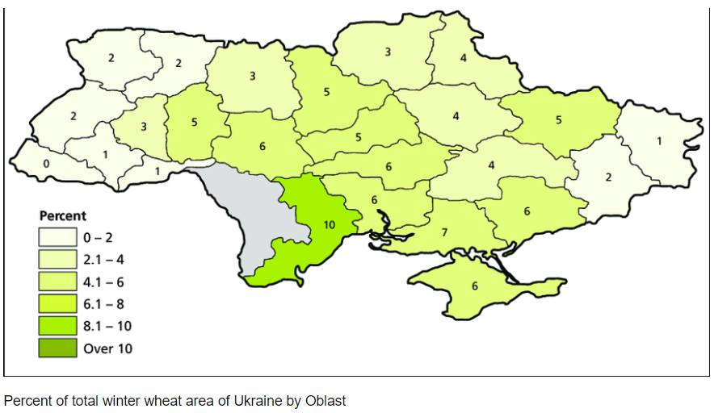
(우크라이나는 아시다시피 광활한 영토가 거의 다 평지인데, 전 국토의 70%가 농토라네요.) 밀밭에서 전투가 벌어지는 것이 문제가 아니라, 비료와 제초제 부족, 그리고 농기계를 위한 연료 부족이 큰 문제라고 합니다. 기사를 읽어보니 농부들이 파괴된 러시아군 탱크나 트럭에서, 또 거기서 새어나온 디젤유가 그 근처의 웅덩이의 물 위에 뜬 것을 걷어서 농기계에 넣는 수준이랍니다. 모든 연료는 일단 우크라이나 군대가 우선권을 가지고 있으니까요. 근데 그 뿐만 아니라, 작년 하반기부터 천연가스 가격 상승으로 인해 비료 가격이 너무 올라서 비료를 미리 사두지 못한 것이 가장 큰 문제랍니다. 전쟁 이전부터 올해 농사는 망쳤다는 감이 꽤 컸답니다. 그래서 밀값은 전쟁 발발 이전부터 크게 올랐었습니다.
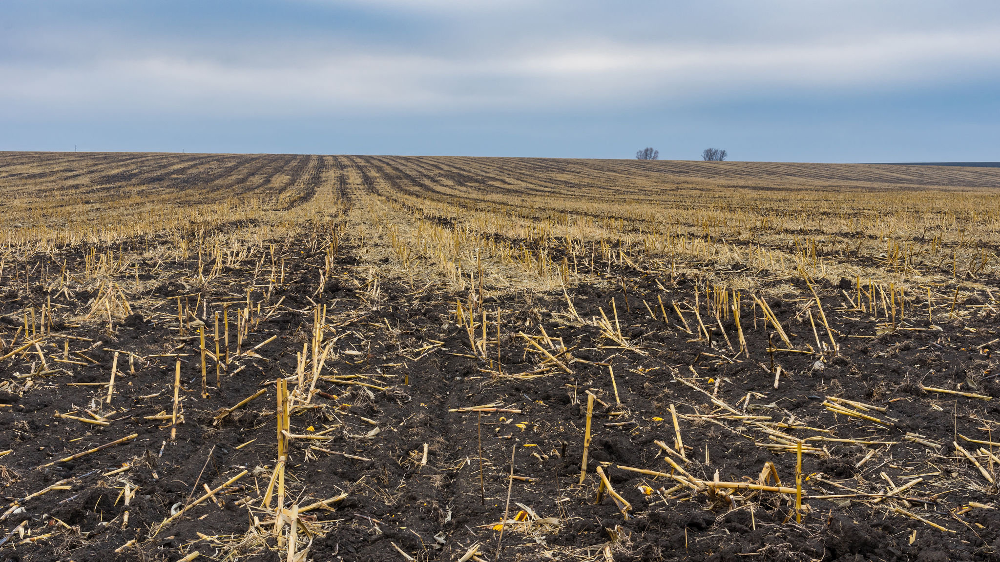
작년까지 비료 열심히 뿌리던 농토에, 그것도 우크라이나의 전설적인 흑토(chernozem) 지대에서 한철 비료 안 뿌렸다고 설마 수확량이 급감하겠느냐는 설도 꽤 있답니다. 그러나 농부들은 이번 전쟁 때문에, 당장 휴전이 시행되어도 적어도 15%, 어쩌면 50% 가량 수확량이 줄어들 것이라고 예상한답니다. 3월 20일 뉴스를 보니 우크라이나 정부가 '전쟁에도 불구하고 씨를 뿌리자!'라며 농부들에게 봄 파종을 독려하는 캠페인을 펼치며서 목표로 하는 수확량이 전년도 70%입니다. 이건 예상치가 아니라 목표치이니 실제 예상치는 더 낮을 수 있습니다.
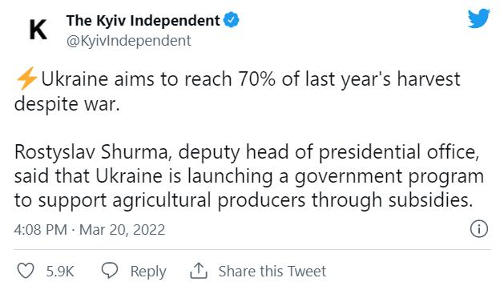
전문가들에 따르면 뿌려야 할 비료의 50%는 이미 작년 가을말에 뿌렸고, 우크라이나의 보리, 옥수수, 유채꽃 등의 봄 파종은 6월 첫째주까지만 완료하면 되니까 아직 절망적인 상황은 아니라고 합니다. 전쟁으로 인해 농업 노동 인력 부족이 문제가 되지 않을까 싶습니다만, 의외로 그게 큰 걱정은 아니랍니다. 우크라이나 농업 노동인구의 65%는 여성이라고 합니다. 우리나라 농촌에 비해 땅은 넓고 인구가 적다는 것이, 일손이 적게 들어가는 겨울밀에 집중하는 이유 중 하나일 것 같습니다.
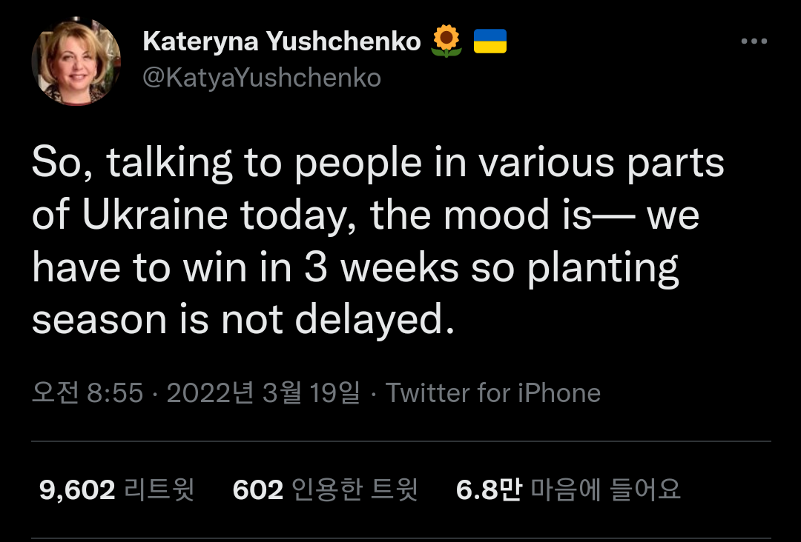
(어떤 전문가는 6월 첫째주까지만 파종 완료하면 된다지만, 또 다른 소식통은 3주안에 전쟁 끝내야 올해 농사 안 망친다고 합니다.) 전쟁도 전쟁이지만, 우크라이나의 곡물 수확에 비관적인 이유는 전쟁보다도 비료와 연료 가격이 너무 비싸다는 것 때문이랍니다. 역사적으로 부셸당 최고 가격이 8달러를 넘기가 힘들었습니다만, 현재 국제 시장에서 밀 가격이 부셸당 12달러 수준으로 굉장히 높습니다. 현재 봄밀을 다루는 미국 미네아폴리스 밀 시장의 가격보다 겨울밀을 다루는 시카고 밀 시장 가격이 더 높다고 합니다. 이건 매우 비정상적인 케이스로서 보통은 봄밀 가격이 더 높답니다.
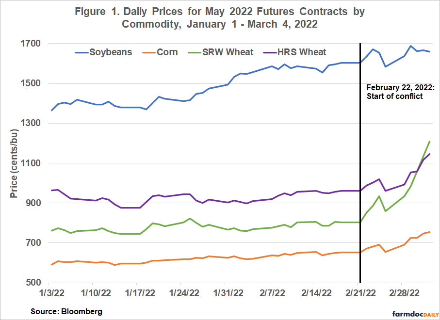
(최근의 주요 곡물 가격입니다. 저기서 SRW은 Soft Red Winter, 즉 연질 겨울밀을 뜻하고 HRS는 Hard Red Spring, 즉 경질 봄밀을 뜻합니다. 대충 3월 초에 꼭지를 친 것 같고 그 이후로는 꽤 떨어졌으니 지금 투자하실 거면 조심하세요.) 보통은 이렇게 가격이 치솟으면 그 수익을 노리고 생산이 증가하기 따르기 때문에 시장의 수급을 맞추고 결국 가격이 떨어지지 않나요? 공장제품이나 석유나 천연가스 등은 그게 가능하지만, 곡물은 키우는데 시간이 걸리고 또 전통적인 1차 산업이다보니 그게 쉽지가 않습니다. 그럼에도 불구하고 북미 지역 농부들은 여전히 밀 경작지를 더 늘릴 생각이 별로 없다고 합니다. 이는 시장에 별로 부화뇌동하지 않고 평소대로 (지력 보존을 위해) 다른 작물로 순환경작을 하는 농부들의 고집에도 원인이 있지만, 부셸당 12달러라는 가격이 맥아용 보리 및 식용유용 카놀라를 순환경작해서 얻는 소득을 포기할 정도로 높지는 않기 때문이라고 합니다. 게다가, 작년 가뭄으로 인해 밀 종자가 넘쳐나는 상황이 아니라서, 밀 경작지를 늘리고 싶어도 늘리기가 쉽지 않다고 합니다.
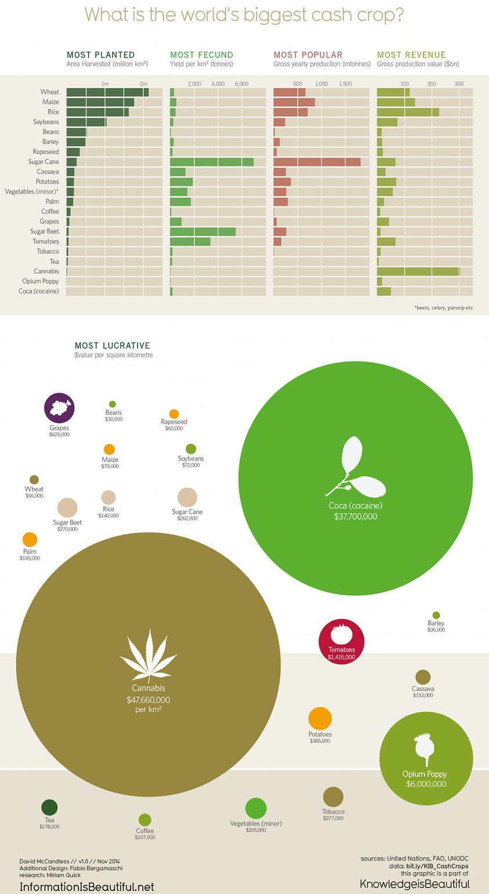
(여기서 잠깐, 작물별로 면적당 올릴 수 있는 매출액 규모를 보여주는 그림입니다. 미드 Ozark에서 멕시코 마약 카르텔은 코카인을 키우고, 척박한 미국 촌동네 마약 가문은 양귀비를 키우는 이유가 있네요. 밀과 대마는 천문학적인 차이가 나지만, 의외로 양귀비는 토마토와 비교해서 수익률 차이가 뭐 천문학적 수준까지는 아닙니다.) 게다가 계속 밀 수요가 늘어나고 있는 중국에서, 하필 올해 여름에 수확할 겨울밀 수확량이 완전히 폭망할 것으로 예상되고 있답니다. 뿐만 아니라 브라질과 아르헨티나 등 남아메리카에 지금 가뭄이 심각하여 거기서 많이 수출하는 옥수수와 콩, 설탕도 흉작이 예상되고 있습니다. 게다가 결정적으로, 미국도 작년 봄부터 계속 가뭄입니다. 2020년과 올해 3월의 상황을 보여주는 가뭄 지도를 비교해보면 상황이 암울합니다.
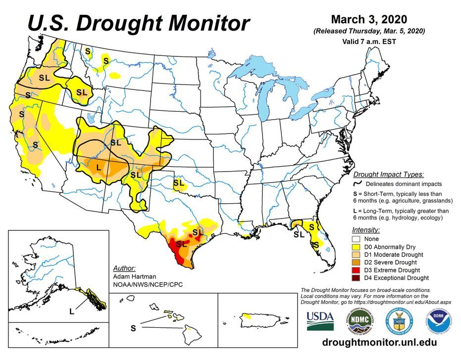
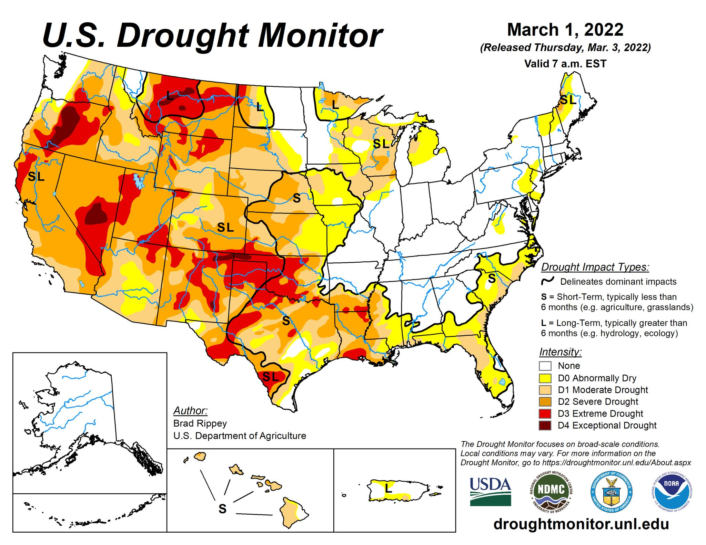
게다가 러시아가 비료 수출을 중지한 것도 전세계 식량 상황에 먹구름을 던집니다. 세계 제1위 비료 수출국가가 바로 러시아이고, 그 꼬붕 국가인 벨라루스도 6위입니다. 이들의 비료 수출이 끊기면 전세계에서 많은 이들이 굶고, 그러면 더 많은 피가 흐르게 됩니다. 18세기말 프랑스 대혁명이나 2010~2011년 아랍의 자스민 혁명도 모두 빵값이 너무 많이 오르는 바람에 일어난 사태입니다.
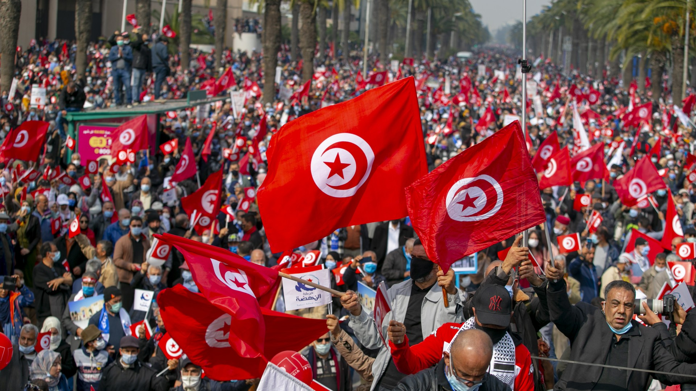
(2010~2011년 튀니지에서 시작된 자스민 혁명은 '아랍의 봄'이라는 큰 혁명으로 이어졌습니다. 시리아 내전도 이때 발발했지요. 그 결과 중동의 중견 강국이던 시리아가 산산조각이 났고 많은 비극이 빚어졌습니다.) 러시아와 우크라이나는 전세계 밀 수출의 25% 이상을 차지합니다. 전세계 밀 생산량을 분모로 하고, 저 두 나라의 수출량을 분자로 따져도 그 밀 수출량 비중은 7% 이상. 그것들이 한꺼번에 중단될 위기입니다. 당장 오늘 전쟁이 멈추더라도 아마도 올 한해는 이 두 국가가 수출을 재개할 수 있을지 여부는 장담할 수 없습니다. 러시아와 우크라이나의 밀은 가장 크게는 터키와 이집트로 갑니다. 터키와 이집트 뿐만 아니라 레바논 튀니지 등 북아프리카 및 레반트 지역은 모두 러시아와 우크라이나로부터의 밀 수입에 크게 의존하는데 당장 그 수입이 딱 끊겼습니다. 이 국가들은 이미 전부터 밀에 대해 국가가 보조금을 주어 가격을 안정시키고 있었는데, 일부 국가는 밀 재고량이 1달 분도 안된다고 합니다. 수입을 다변화 하려고 해도 그나마 밀 수출을 하던 루마니아 세르비아 등도 밀 등 농산물 수출 금지에 나섰습니다. 대서양과 인도양을 건너 먼 미국이나 호주의 밀을 수입해도 되겠으나 운송비 등으로 가격이 많이 비싸지므로 이들 국가들이 감당하기가 벅찹니다. 당장 굶게 된 이들 나라들이 다른 시장에서 밀을 사기 시작하면 전세계 수입의 2.1%를 차지하는 한국도 결국 영향을 받습니다.
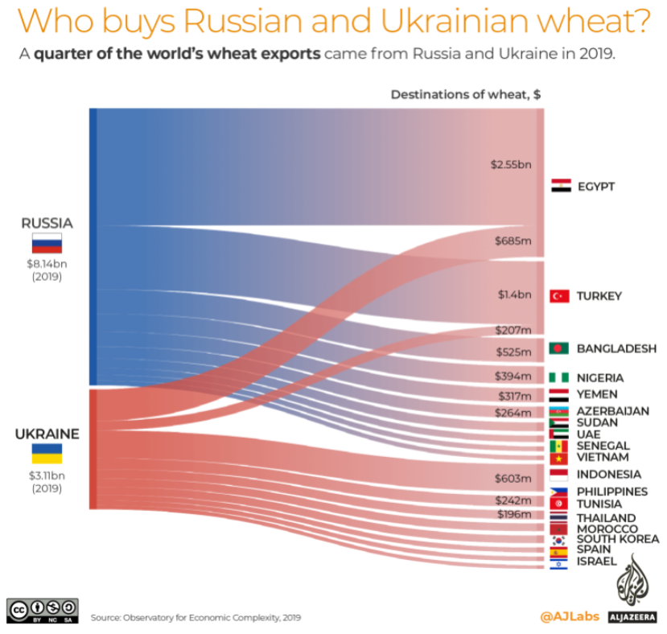
** 짐작들 하시겠지만 이 글은 3/23일에 쓴 것이 아니라 그 전 주말에 미리 써뒀다가 목요일 아침에 발행되도록 예약 걸어둔 것입니다. 이 글이 발행될 때 즈음에라도 우크라이나 전쟁이 끝났으면 합니다.